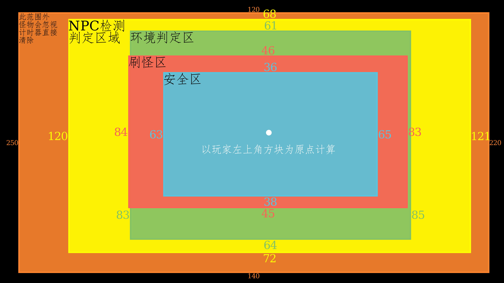
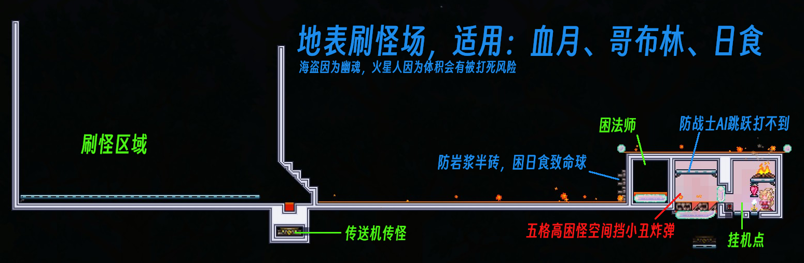
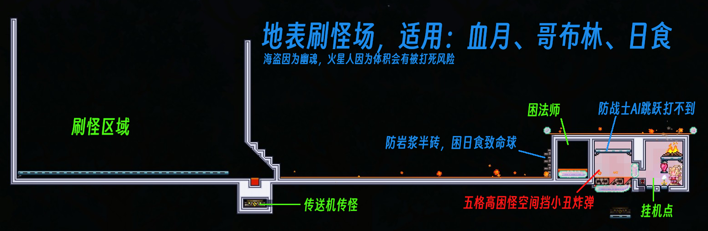

泰拉速查笔记
1. 纯信息
- 部分草药和药水相关信息（加号表示有）:
药水/草药 太阳花 月光草 火焰花 闪耀根 寒颤棘 雏菊/水叶草 备注 铁皮药水（荐） + +8防御，需铁矿或铅矿 再生药水 + +生命回复，还须蘑菇 生命力药水 + + + +20%生命上限，还需要七彩矿鱼 耐力药水 + 10%减伤，还需装甲洞穴鱼 敏捷药水 + +25%移速，还需要仙人掌 重力药水 + + 还需要死亡草和羽毛 洞穴探险药水 + + 探灵矿/叶绿矿/生命果，还须(铂)金矿 危险感知药水 + 挖矿药水 + 还需要蚁狮上颚(沙漠) 夜猫子药水 + + 光芒药水 + 还需要发光蘑菇 黑曜石皮药水 + + 还需要黑曜石 生物群系视觉药水 + + + 净化环境用 - 刷怪场

- 区域：建议在此基础上增加一些距离，为实际操作换取一些空间（如快速切换环境等）
- 安全区域:W63， N36， E65， S38
- 刷怪区域:W84， N46， E83， S45
- 环境判定:W83， N61， E85， S64，至少需清定此范围防环境污染
- NPC 检测:W120，N68， E121，S72，确保此范围内没有NPC，有则用影烛
- 删怪区域:W250，N120，E220，S140
- 刷怪条件 方块（大多，丛林龟也是）、环境（冰雪龟）、墙怪（蜘蛛），环境+墙+方块（地牢）、其它（混沌精要影烛）
- 环境构建
- 沙漠（需要有墙）1.5k物块，雪地1.5k
- 丛林250，地牢250（还要刷怪处有背景墙和方块，玩家在危险墙后）（墙分砖、板、瓷砖，战士只用砖墙）
- 神圣125，猩红300
- 蘑菇地100
 

- 区域：建议在此基础上增加一些距离，为实际操作换取一些空间（如快速切换环境等）
- 十字盾
- 黑曜石护盾
- 十字章护身符（最子集两种材料可以互相转化）
- 反光墨镜
- 蒙眼布：邪恶史莱姆（邪恶石块可刷）、邪恶木乃伊（邪恶感染的沙块可刷）
- 袖珍镜：蛇发女妖（大理石可刷）（推荐）
- 盔甲背带
- 维生素：腐化者、恶心浮游怪（穿墙怪）
- 盔甲抛光剂：(蓝)装甲骷髅（普通洞穴可刷）（推荐）
- 药用绷带
- 粘性绷带：狼人（建议和月光护身符一起刷）……
- 牛黄：毒泥、(苔藓)黄蜂（丛林泥块可刷）（推荐）
- 反诅咒咒语
- 邪眼：猩红斧、附魔剑、诅咒骷髅头（肉前地牢有）
- 扩音器：妖精（建议和妖精尘一起刷）、邪恶木乃伊（刷腐肉时顺便刷）（推荐x2）
- 计划书
- 三折地图：光明木乃伊、巨型蝙蝠（推荐）
- 快走时钟：妖精（建议和扩音器一起刷）（推荐）、木乃伊
- 反光墨镜
- 天界贝壳：{月光护符（狼人）+海神贝壳（日食）}+{月亮石（日食）+太阳石（石巨人）}
- 微光功能：
- 拆分物品为合成原材料（分解药水不能100%返还草药）
- 投币池：丢硬币进去增加运气
- 降级物品：例如矿物降级分解
- 墙壁危险化：将安全的人工背景墙转化为能刷怪的危险背景墙
- 物品转化：
- 生命水晶->活力水晶（永久加人物生命恢复速度）
- 生命果->神盾果（永久人物加4防御）
- 任意水果->仙馔密酒（永久增加人物挖掘速度）
- 魔法书（巫师购买）->先进战斗技术：卷二（增加NPC防御）
- 商贩帽（杀死游商掉）->商贩背包（增加游商售卖商品）
===========- 僵尸臂->屁垫（整蛊坐垫）
- 天使雕像->以太天界塔
- 蘑菇草种<->丛林草种
- 炼药桌<->施法桌
- 岩浆石<->熔岩护身符
- 十字盾的子集合成材料
2. 流程相关
- 狱岩矿（需要65x3=195的狱石，65个黑曜石）
- 晶塔
- 丛林晶塔 油漆工 | 树妖、巫医
- 洞穴晶塔 哥布林、机械师 | 炸弹商、酒馆老板
- 沙漠晶塔 （高尔夫球手、染料商）（随便了这里）
- 雪原晶塔 （功能上不大重要，随便塞点什么npc撑个场子就行）
- 森林晶塔 向导、奸商、（其他垃圾）
- 海洋晶塔 渔夫、派对女孩、理发师
- 派对女孩应该和巫师一起丢到神圣去更好
- 挖叶绿矿（总计需要480个叶绿矿，即54+24+18个叶绿锭）